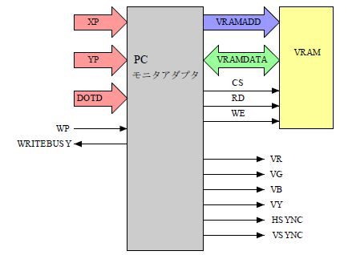
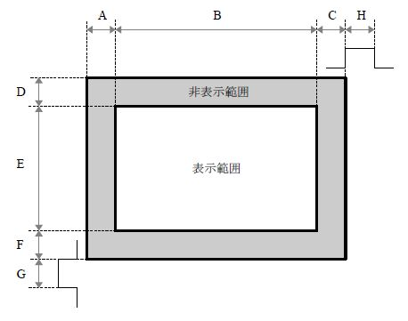
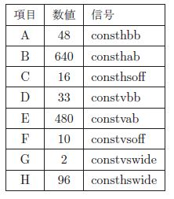
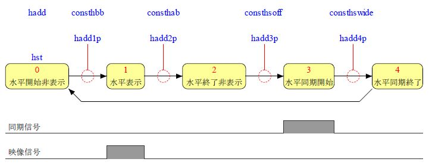
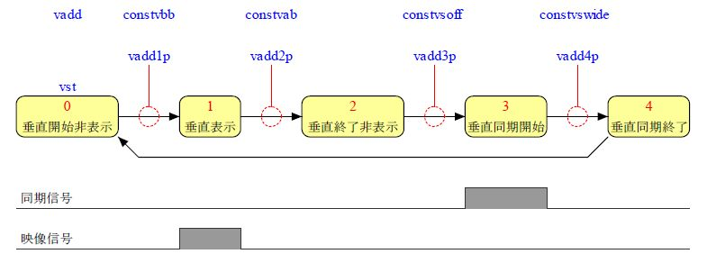
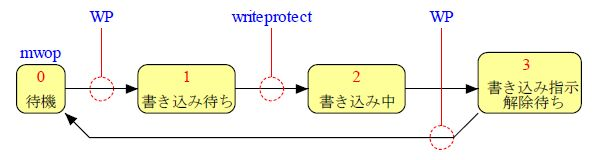
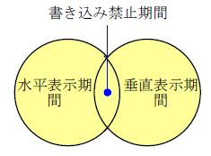

|
PCモニタアダプタ2 |
パソコンのアナログRGB方式のCRTを操作する論理です
PCモニタアダプタ
は
640×480
の解像度の発色数が4^4=
256
でしたが
PCモニタアダプタ2
は複数の解像度に対応しました。
画素は
RGB
を各4ビット、
Y
を輝度として4ビットを使って発色数は16^4=
65536
になります。
画素の読み出しは
PCモニタアダプタ
は1回のメモリ操作で2画素の読み出し
PCモニタアダプタ2
は1回のメモリ操作で1画素の読み出しになっています。
| 図1: 構成 |
|
 |
|
画面 |
画面構成は 図2 の 「画面構成」 のようになっています。右端には水平同期信号、下端には垂直同期信号があります。数値 は 図3 の 「画面定数」 を見てください。
| 図2: 画面構成 |
|
 |
640×480
以上の解像度での定数の確定はできていません、これ以上の解像度ではデバイスの速度の限界点に近い動作速度になるのでメモリやPLDやD/Aコンバータなどの
速度を勘案した上で周波数を決定して定数を確定させます。
メモリの速度が足りない場合は1回のメモリ操作で読み出す画素数を増やせばPLDの端子の数は増えますがメモリへの速度要求を緩和できます。
PLDの速度は
CPLD
に実現する場合には
90MHz
程度までのフィッティング結果が出ています。
D/Aコンバータは白黒でよいのであれば使わないことも可能です。
|
640×480の場合
|
| 図3: 画面定数 |
|
 |
数値は画素の数です。チップCLK には 24MHz を使います、水平の総画素数は 800 なので 24MHz÷800 で水平周波数は 30KHz になります。垂直の総画素数は 525 なので 30KHz÷525 で垂直周波数は約 57Hz になります。画素周波数は 24MHz です。 41.6ns で1 画素のデータ 8 ビットを送り出します。
|
水平行程 |
水平行程は 図4 のとおりです。 hst が各行程の位置を示します。 hadd が各行程に初めで0になり該当する 図3 の 画面定数 まで計数して行程の期間を決定します。
| 図4: 水平行程 |
|
 |
|
垂直行程 |
垂直行程は 図5 のとおりです。 vst が各行程の位置を示します。 vadd が各行程に初めで0になり該当する 図3 の 画面定数 まで計数して行程の期間を決定します。
| 図5: 垂直行程 |
|
 |
|
書き込み行程 |
VRAM への書き込みは表示期間を避けておこないます、この期間に入った書き込み指示はこの期間を抜けてから実行されます。 書き込み指示は WP で示します 書き込み禁止期間は 図7 の期間で writeprotect で示します。 書き込み行程は mwop で示します。
| 図6: 書き込み行程 |
|
 |
| 図7: 書き込み禁止期間 |
|
 |